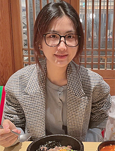

Programme & institutional affiliationプログラム・機関情報

PhotoTo improve the energy-saving performance of passive dehumidification and solar collection (PDSC) envelope system, which naturally cools and dehumidifies indoor air in summer and collects solar heat in winter, we develop a novel PSE (PDSC system combined with energy recovery ventilation) to reduce heat loads of air-conditioning system. Based on the results of numerical experiments of PSE conducted so far, we will jointly develop PSE equipment with private companies to commercialize it for general use. In addition, we will conduct outdoor experiments in a demonstration house and numerical simulations to verify efficient operating conditions and methods for PSE throughout the year and design an optimal control system.
夏季は自然に冷却・除湿し、冬季は太陽集熱する熱性能可変型PDSC外被システムの性能向上を目途に、PDSCとERV（全熱交換換気）を併用したPSE（再生可能エネルギーと全熱交換を活用したハイブリッド換気システム）の省エネルギー効果について検討する。これまでに行ったPSEの数値実験結果を基に、汎用製品化を目指して実際に民間企業とPSE機器を共同開発する。更に、実証住宅による屋外実験と数値シミュレーションによりPSEの通年に亘る効率的な運転条件や方法について検証し、最適な制御システムを設計する。